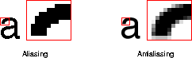
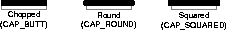
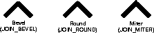
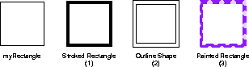
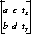
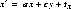
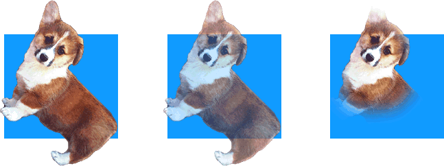

To render a graphic object using the Java 2DTM API, you set up the Graphics2D context and pass the graphic object to one of the Graphics2D rendering methods.
You can modify the state attributes that form the Graphics2D context to:
-
Vary the stroke width.
-
Change how strokes are joined together.
-
Set a clipping path to limit the area that is rendered.
-
Translate, rotate, scale, or shear objects when they are rendered.
-
Define colors and patterns to fill shapes with.
-
Specify how multiple graphics objects should be composed.
Graphics2D defines several methods for adding and changing attributes in the graphics context. Most of these methods take an object that represents a particular attribute, such as a Paint or Stroke object.
The Graphics2D context holds references to these attribute objects: they are not cloned. If you alter an attribute object that is part of the Graphics2D context, you need to call the appropriate set method to noti
fy the context. Modifying an attribute object during a rendering operation will cause unpredictable and possibly unstable behavior.
2.2.1 Rendering Process
When a graphic object is rendered, the geometry, image, and attribute information are combined to calculate which pixel values must be changed on the display.
The rendering process for a Shape can be broken down into four steps:
-
If the Shape is to be stroked, the Stroke attribute in the Graphics2D context is used to generate a new Shape that encompasses the stroked path.
-
The coordinates of the Shape's path are transformed from user space into device space according to the transform attribute in the Graphics2D context.
-
The Shape's path is clipped using the clip attribute in the Graphics2D context.
-
The remaining Shape, if any, is filled using the Paint and Composite attributes in the Graphics2D context.
Rendering text is similar to rendering a Shape, since the text is rendered as individual glyphs and each glyph is a Shape. The only difference is that the Java 2D API must determine what Font to apply to the text and get t
he appropriate glyphs from the Font before rendering.
Images are handled differently, transformations and clipping operations are performed on the image's bounding box. The color information is taken from the image itself and its alpha channel is used in conjunction with the current Composite
attribute when the image pixels are composited onto the rendering surface.
2.2.2 Controlling Rendering Quality
The Java 2D API lets you indicate whether you want objects to be rendered as quickly as possible, or whether you prefer that the rendering quality be as high as possible. Your preferences are specified as hints through the RenderingHints attrib
ute in the Graphics2D context. Not all platforms support modification of the rendering mode so specifying rendering hints does not guarantee that they will be used.
The RenderingHints class supports the following types of hints:
-
Alpha interpolation--can be set to default, quality, or speed.
-
Antialiasing--can be set to default, on, or off.
-
Color Rendering-can be set to default, quality, or speed.
-
Dithering--can be set to default, disable, or enable.
-
Fractional Metrics--can be set to default, on, or off.
-
Interpolation--can be set to nearest-neighbor, bilinear, or bicubic.
-
Rendering--can be set to default, quality, or speed.
-
Text antialiasing--can be set to default, on, or off.
To set or change the RenderingHints attribute in the Graphics2D context, you call setRenderingHints. When a hint is set to default, the platform rendering default is used.
Antialiasing
|
|---|
When graphics primitives are rendered on raster-graphics display devices, their edges can appear jagged because of aliasing. Arcs and diagonal lines take on a jagged appearance because they are approximated by turning on the pixels that are close
st to the path of the line or curve. This is particularly noticeable on low-resolution devices, where the jagged edges appear in stark contrast to the smooth edges of horizontal or vertical lines.
Antialiasing is a technique used to render objects with smoother-appearing edges. Instead of simply turning on the pixel that is closest to the line or curve, the intensity of surrounding pixels is set in proportion to the amount of area covered
by the geometry being rendered. This softens the edges and spreads the on-off transition over multiple pixels. However, antialiasing requires additional computing resources and can reduce rendering speed. <
p>
|
2.2.3 Stroke Attributes
Stroking a Shape such as a GeneralPath object is equivalent to running a logical pen along the segments of the GeneralPath. The Graphics2D Stroke attribute defines the characteristics of the mark draw
n by the pen.
A BasicStroke object is used to define the stroke attributes for a Graphics2D context. BasicStroke defines characteristics such as the line width, endcap style, segment join-style, and the dashing pattern. To set or change
the Stroke attribute in the Graphics2D context, you call setStroke.

Figure 2-1 endcap styles supported by BasicStroke

Figure 2-2 Join styles supported by BasicStroke
For example, the first image in Figure 2-3 uses the miter join-style; the second image uses a round join-style, a round endcap style, and a dashing pattern.
Figure 2-3 Stroke Styles
The Graphics2D rendering methods that use the Stroke attribute are draw, drawArc, drawLine, drawOval, drawPolygon, drawPolyline, drawRect, and drawRoun
dRect.When one of these methods is called, the outline of the specified Shape is rendered. The Stroke attribute defines the line characteristics and the Paint attribute defines the color or pattern of the mark drawn
by the pen.
For example, when draw(myRectangle) is called:
-
The Stroke is applied to the rectangle's outline.
-
The stroked outline is converted to a Shape object.
-
The Paint is applied to the pixels that lie within the contour of the outline Shape.
This process is illustrated in Figure 2-4:
Figure 2-4 Stroking a Shape
2.2.4 Fill Attributes
The fill attribute in the Graphics2D context is represented by a Paint object. You add a Paint to the Graphics2D context by calling setPaint.
When a Shape or glyph is drawn (Graphics2D.draw, Graphics2D.drawString), the Paint is applied to all of the pixels that lie inside of the Shape that represents the object's stroked outline. When a
Shape is filled (Graphics2D.fill), the Paint is applied to all of the pixels that lie within the Shape's contour.
Simple solid color fills can be set with the setColor method. Color is the simplest implementation of the Paint interface.
To fill Shapes with more complex paint styles such as gradients and textures, you use the Java 2D Paint classes GradientPaint and TexturePaint. These classes eliminate the time-consuming task of creating complex
fills using simple solid-color paints. Figure 2-5 illustrates two fills that could easily be defined by GradientPaint and TexturePaint.
Figure 2-5 Complex Fill Styles
When fill is called to render a Shape, the system:
-
Determines what pixels comprise the Shape.
-
Gets the color of each pixel from the Paint object.
-
Converts the color to an appropriate pixel value for the output device.
-
Writes the pixel to that device.
Batch Processing
|
|---|
To streamline the processing of pixels, the Java 2D API processes them in batches. A batch can be either a contiguous set of pixels on a given scanline or a block of pixels. This batch processing is done in two steps:
-
The Paint object's createContext method is called to create a PaintContext. The PaintContext stores the contextual information about the current rendering operation and the information necessary to generate
the colors. The createContext method is passed the bounding boxes of the graphics object being filled in user space and in device space, the ColorModel in which the colors should be generated, and the transform used to map user space
into device space. The ColorModel is treated as a hint because not all Paint objects can support an arbitrary ColorModel. (For more information about ColorModels, see
"Color".")
-
The getColorModel method is called to get the ColorModel of the generated paint color from the PaintContext.
The getRaster method is then called repeatedly to get the Raster that contains the actual color data for each batch. This information is passed to the next stage in the rendering pipeline, which draws the generated color using the cu
rrent Composite object.
|
2.2.5 Clipping Paths
A clipping path identifies the portion of a Shape or Image that needs to be rendered. When a clipping path is part of the Graphics2D context, only those parts of a Shape or Image that lie wit
hin the path are rendered.
To add a clipping path to the Graphics2D context, you call setClip. Any Shape can be used to define the clipping path.
To change the clipping path, you can either use setClip to specify a new path or call clip to change the clipping path to the intersection of the old clipping path and a new Shape.
2.2.6 Transformations
The Graphics2D context contains a transform that is used to transform objects from user space to device space during rendering. To perform additional transformations, such as rotation or scaling, you can add other transforms to the Graph
ics2D context. These additional transforms become part of the pipeline of transformations applied during rendering.
Graphics2D provides several different ways to modify the transform in the Graphics2D context. The simplest is to call one of the Graphics2D transformation methods: rotate, scale, shear, or
translate. You specify the characteristics of the transform that you want to be applied during rendering, and Graphics2D automatically makes the appropriate changes.
You can also explicitly concatenate an AffineTransform with the current Graphics2D transform. An AffineTransform performs a linear transformation such as translation, scaling, rotation, or shearing on a set of gra
phics primitives. When a transform is concatenated with an existing transform, the last transform specified is the first to be applied. To concatenate a transform with the current transform, you pass an AffineTransform to Graphics
2D.transform.
Graphics2D also provides a version of drawImage that takes an AffineTransform as a parameter. This enables you to apply a transformation to an image object when it is drawn without permanently modifying the transformation
pipeline. The image is drawn as if you had concatenated the transform with the current transform in the Graphics2D context.
Affine Transforms
|
|---|
The Java 2D API provides one transform class, AffineTransform. AffineTransforms are used to transform text, shapes, and images when they are rendered. You can also apply transforms to Font objects to create new
font derivations, as discussed in
"Creating Font Derivations".
An affine transformation performs a linear transformation on a set of graphics primitives. It always transforms straight lines into straight lines and parallel lines into parallel lines; however, the distance between points and the angles between nonparal
lel lines might be altered.
Affine transformations are based on two-dimensional matrices of the following form:
 where  and 
Transforms can be combined, effectively creating a series or pipeline of transformations that can be applied to an object. This combination is referred to as concatenation. When a transform is concatenated with an existing transform, suc
h as with AffineTransform.concatenate, the last transform specified is the first to be applied. A transform can also be pre-concatenated with an existing transform. In this case, the last transform specified is the last to be applied.
Pre-concatenation is used to perform transformations relative to device space instead of user space. For example, you could use AffineTransform.preConcatenate to perform a translation relative to absolute pixel space.
|
2.2.6.1 Constructing an AffineTransform
AffineTransform provides a set of convenience methods for constructing AffineTransform objects:
-
getTranslateInstance
-
getRotateInstance
-
getScaleInstance
-
getShearInstance
To use these methods, you specify the characteristics of the transform you want to create and AffineTransform generates the appropriate transform matrix. You can also construct an AffineTransform by directly specifying the elements o
f the transformation matrix.
2.2.7 Composite Attributes
When two graphic objects overlap, it is necessary to determine what colors to render the overlapping pixels. For example, if a red rectangle and a blue rectangle overlap, the pixels that they share could be rendered red, blue, or some combination of the t
wo. The color of the pixels in the overlapping area will determine which rectangle appears to be on top and how transparent it looks. The process of determining what color to render pixels shared by overlapping objects is called compositing.
Two interfaces form the basis of the Java 2D compositing model: Composite and CompositeContext.
To specify the compositing style that should be used, you add an AlphaComposite object to the Graphics2D context by calling setComposite. AlphaComposite, an implementation of the Composite interface,
supports a number of different compositing styles. Instances of this class embody a compositing rule that describes how to blend a new color with an existing one.
One of the most commonly used compositing rules in the AlphaComposite class is SRC_OVER, which indicates that the new color (the source color) should be blended over the existing color (the destination color).
AlphaComposite Composition Rule
|
Description
|
Example
|
|---|
|
CLEAR
|
Clear
|
|
|
DEST_IN
|
Destination In
|
|
|
DEST_OUT
|
Destination Out
|
|
|
DEST_OVER
|
Destination Over
|
|
|
SRC
|
Source
|
|
|
SRC_IN
|
Source In
|
|
|
SRC_OUT
|
Source Out
|
|
|
SRC_OVER
|
Source Over
|
|
2.2.7.1 Managing Transparency
A color's alpha value is a measure of its transparency: it indicates, as a percentage, how much of a previously rendered color should show through when colors overlap. Opaque colors (alpha=1.0) don't allow any of the underlying
color to show through, while transparent colors (alpha=0.0) let all of it show through.
When text and Shapes are rendered, the alpha value is derived from the Paint attribute in the Graphics2D context. When Shapes and text are antialiased, the alpha value from the Paint
in the Graphics2D context is combined with pixel coverage information from the rasterized path. Images maintain their own alpha information--see "Transparency and Images" for
more information.
When you construct an AlphaComposite object, you can specify an additional alpha value. When you add this AlphaComposite object to the Graphics2D context, this extra alpha value increases the transparency of any graphic ob
jects that are rendered--the alpha value of each graphic object is multiplied by the AlphaComposite's alpha value.
2.2.7.2 Transparency and Images
Images can carry transparency information for each pixel in the image. This information, called an alpha channel, is used in conjunction with the Composite object in the Graphics2D context to blend the image with existing dr
awings.
For example, Figure 2-6 contains three images with different transparency information. In each case, the image is displayed over a blue rectangle. This example assumes that the Graphics2D context contai
ns an AlphaComposite object that uses SRC_OVER as the compositing operation.

Figure 2-6 Transparency and Images
In the first image, all of the pixels are either fully opaque (the dog's body) or fully transparent (the background). This effect is often used on Web pages. In the second image, all of the pixels in the dog's body are rendered using a uniform, no
n-opaque alpha value, allowing the blue background to show through. In the third image, the pixels around the dogs face are fully opaque (alpha=1.0), but as the distance from its face increases, the alpha values for the pixels decrease.
CONTENTS | PREV
| NEXT
Copyright © 1997-1999 Sun Microsystems, Inc. All Rights Reserved.